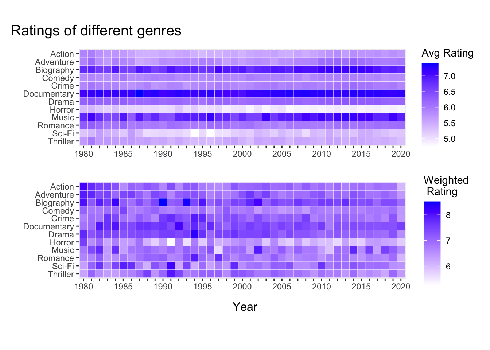
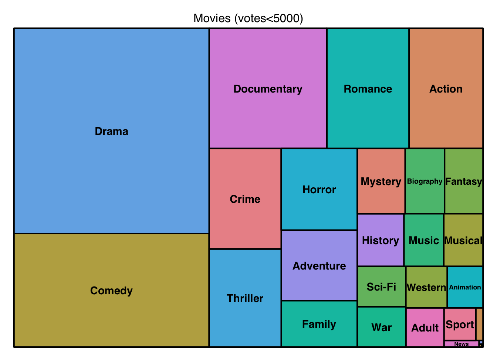
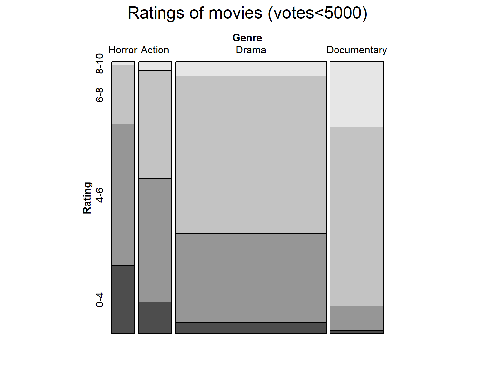
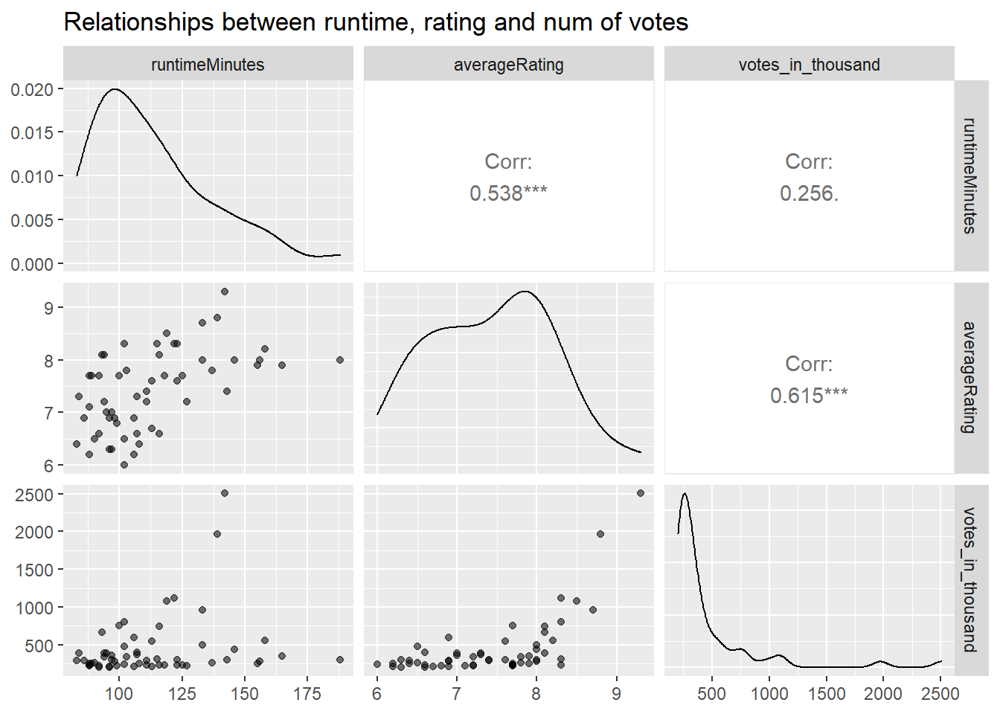
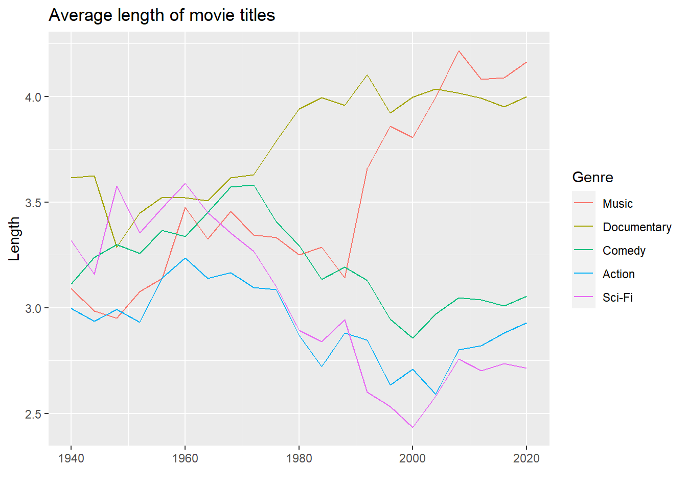

Chapter 5 Results
5.1 Movie ratings of different years
5.1.1 Ratings for all movies
IMDB rating is a good reference if we want to know the quality of different movies. Do different genres have obviously different average ratings? Has the quality of movies changed over time? We can find something from the figure below:
main_genres <- c( 'Drama','Comedy','Music','Documentary','Action', 'Romance', "Thriller",'Crime', 'Horror', 'Adventure', 'Biography', 'Sci-Fi')
x <- left_join(title.genres, title.basics, by='tconst')
x <- left_join(x, title.ratings, by='tconst')
df <- x %>%
filter(startYear<=2020,startYear>=1980, genres.x %in% main_genres, is.na(numVotes)==FALSE, is.na(averageRating)==FALSE) %>%
mutate(totalratings=numVotes*averageRating) %>%
group_by(startYear, genres.x) %>%
summarise(rating2=sum(totalratings)/sum(numVotes), .groups = 'drop') %>%
ungroup()
xlabels = c(1980:2020)
for (i in 1:length(xlabels)){
if (strtoi(xlabels[i])%%5!=0){
xlabels[i] <- ""
}
}
g2 <-ggplot(df, aes(startYear, fct_rev(factor(genres.x)), fill = rating2)) +
geom_tile(color = "white") +
coord_equal() +
scale_fill_gradient(low="white", high="blue", guide = guide_colourbar(title='Weighted \n Rating')) +
scale_x_discrete(labels=xlabels) +
xlab("") +
ylab("")
main_genres <- c( 'Drama','Comedy','Music','Documentary','Action', 'Romance', "Thriller",'Crime', 'Horror', 'Adventure', 'Biography', 'Sci-Fi')
df <- x %>%
filter(startYear<=2020,startYear>=1980, genres.x %in% main_genres, is.na(numVotes)==FALSE, is.na(averageRating)==FALSE) %>%
group_by(startYear, genres.x) %>%
summarise(rating=mean(averageRating), .groups = 'drop') %>%
ungroup()
xlabels = c(1980:2020)
for (i in 1:length(xlabels)){
if (strtoi(xlabels[i])%%5!=0){
xlabels[i] <- ""
}
}
g1 <- ggplot(df, aes(startYear, fct_rev(factor(genres.x)), fill = rating)) +
geom_tile(color = "white") +
coord_equal() +
scale_fill_gradient(low="white", high="blue", guide = guide_colourbar(title='Avg Rating')) +
scale_x_discrete(labels=xlabels) +
xlab("") +
ylab("")
g1 / g2 + # Create grid of plots with title
plot_annotation(title = "Ratings of different genres", caption="Year",
theme = theme(plot.title = element_text(size = 15), plot.caption =element_text(size=12,hjust = 0.5,vjust=6) ))
This is an interesting plot about the ratings of different genres changing with time. The top one calculates the average ratings of movies from each genre and each year. It seems that Documentary, Biograph and Music have the highest ratings, while ratings for Horro movies are the lowest. And there is no obvious trend along the Year dimension.
However, let’s consider this situation: there are two Action movies in 2050.One gets 10000 votes of 10 star, one gets gets 1 vote of 0 star. The average rating would be 5 star. This seems a little unfair, right?
So we also use weighted average, where weights are their number of votes, and we get the bottom plot. Surprisingly, the ratings between different genres are not so large as we thought. Documentary and Biography are not much higher than the others, although Horro still seems the lowest.
Another interesting discovery is that there is a trend along time: movies before 2000 clearly have higher weighted ratings than movies after 2000. Maybe this is a reflection that the quality of movies in recent years are not as well as before?
5.1.2 Rating distributions for 100 best movies
Now that we have a view of ratings of all movies, what about those top-rating movies? Do people have preference among different genres when they are rating? We select 100 top-rating movies of different genres and plot their distributions:
main_genres <- c( 'Drama','Comedy','Music','Documentary','Action', 'Romance', "Thriller",'Crime', 'Horror', 'Adventure', 'Biography', 'Sci-Fi')
x <- left_join(title.genres, title.ratings, by='tconst')
x1 <- x %>%
filter(genres %in% main_genres, numVotes>5000) %>%
group_by(genres) %>%
mutate(r=rank(averageRating*(-1))) %>%
ungroup() %>%
filter(r<=100)
x2 <- left_join(x1, title.basics, by='tconst')
x2$genres.x <- with(x2 ,reorder(genres.x,averageRating,median))
x <- left_join(title.genres, title.ratings, by='tconst')
x1 <- x %>%
filter(genres %in% main_genres) %>%
group_by(genres) %>%
mutate(r=rank(averageRating*(-1))) %>%
ungroup() %>%
filter(r<=100)
x22 <- left_join(x1, title.basics, by='tconst')
#x2$genres.x <- with(x2 ,reorder(genres.x,averageRating,median))
library(ggridges)
g <- ggplot() +
geom_density_ridges(data = x2, aes(y = genres.x, x = averageRating), alpha=0.8,color='white', fill='lightslateblue')+
geom_density_ridges(data = x22, aes(y = genres.x, x = averageRating), alpha=0.2,color=rgb(0,0,0, alpha=0, maxColorValue = 1),
fill='red') +
ylab("")+xlab("Rating")+
ggtitle('Rating distributions for 100 top-rating movies of each genre')
gIf we select movies from all of them, we get the red distributions. But if we only consider movies with more than 5000 votes, we get the purple ones. We find that Documentary has the highest median if we consider all movies, but it gets lower if we exclude those without enough votes. It turns out that there are many documentary movies only have 20 or 50 votes with almost 10 star ratings. It’s the same with biography and music movies.
If we exclude these not well-known works, we can get a picture of the preferences of the most population. It shows that people tend to give higher ratings for Romance movies, while it’s very hard for Horro movies to get high scores.
5.2 Number of votes
As we can see, those movies with few votes can cause big difference when we are analysing the data. What are these movies like? We select those movies with less than 5,000 votes on IMDB and see where they come from:
x <- left_join(title.genres, title.ratings, by='tconst')
x1 <- x %>%
filter(numVotes<5000)
x2 <- left_join(x1, title.basics, by='tconst')
x3 <- x2 %>%
group_by(genres.x) %>%
summarise(c=n()) %>%
ungroup()
library(treemap)
treemap(x3, index="genres.x", vSize="c", type="index",
title='Movies (votes<5000)',fontsize.title=12)
These movies mostly come from Drama, Comedy, Documentary, which is not very surprising. However, we can sense that they may have different ratings, because when we exclude these movies, the average ratings of different genres change differently.
So now we plot the ratings of these movies and get this:
x <- left_join(title.genres, title.ratings, by='tconst')
main_genres = c('Documentary', 'Horror', 'Action', 'Drama')
x1 <- x %>%
filter(numVotes<5000,numVotes>0, genres %in% main_genres)
cl <- function(r){
if (r>=0 & r<4) return('0-4')
if (r>=4 & r<6) return('4-6')
if (r>=6 & r<8) return('6-8')
if (r>=8 & r<=10) return('8-10')
}
x1$rating1 <- lapply(x1$averageRating, cl)
x1$rating2 <- unlist(x1$rating1)
x1$Rating <- fct_rev(factor(x1$rating2))
x1$genres <- factor(x1$genres)
#levels(x1$genres) <- c('Documentary', 'Drama','Crime','Action','Horror')
x1$Genre <- fct_rev(fct_relevel(x1$genres,'Documentary', 'Drama','Action','Horror'))
library(Lock5withR)
library(vcd)
mosaic(Rating~Genre, direction = c("v","h"),x1,main='Ratings of movies (votes<5000)')
As we can see, among these movies, Documentary mostly have 6-8 stars, while Horro movies mostly have 0-6 stars. This proves what we think: there exists many documentary movies with small number of votes but very high ratings.
5.3 Dependency between votes, ratings and runtime
Now we may wonder if votes and ratings have some relationship. The graph below shows the relationship among three variables: votes, ratings, and runtime. Note that we only select popular movies (with number of votes larger than 200,000) to exclude those ‘noisy’ less popular movies.
main_genres <- c( 'Drama','Comedy','Music','Documentary','Action','Sci-Fi')
x <- left_join(title.basics, title.ratings, by='tconst')
x$runtimeMinutes <- as.integer(x$runtimeMinutes)
x$numVotes <- x$numVotes/1e3
x1 <- x%>%
filter(genres %in% main_genres,is.na(runtimeMinutes)==FALSE, is.na(averageRating)==FALSE, is.na(numVotes)==FALSE, runtimeMinutes<400,startYear>=1940,startYear<=2020, numVotes>200)
x1$votes_in_thousand <- x1$numVotes
x2 <- x1 %>%select(runtimeMinutes, averageRating, votes_in_thousand)
library(GGally)
ggpairs(x2, aes(alpha=0.5))
The average rating and number of votes have obvious relationship. This is not difficult to understand: better movies are usually more popular so more people would vote. We also find that longer movies tend to have higher ratings. This is an interesting discovery. One reason could be that longer movies usually come from those with meaningful topics, while entertainment movies are usually shorter.
5.4 Movie titles
5.4.1 Most common words in titles
Do movies of different genres prefer different words in titles? For example, maybe there are a lot of heart in Romance movies titles? Here we select 15 most common words from Action, Animation, Romance, Sci_Fi (meaningless words like ‘the’, ‘to’ are excluded):
main_genres <- c( 'Drama','Comedy','Music','Documentary','Action', 'Romance', "Thriller",'Crime', 'Horror', 'Adventure', 'Biography', 'Sci-Fi')
x <- left_join(title.genres, title.basics, by='tconst')
x1 <- x %>%
filter(startYear>=1990, startYear<=2020)
WordFreq <- function(text) {
txt = text[text!=""]
txt = tolower(txt)
txtList = lapply(txt, strsplit," ")
txtChar = unlist(txtList)
txtChar = gsub("\\.|,|\\!|:|;|\\?","",txtChar) #clean symbol(.,!:;?)
txtChar = txtChar[txtChar!=""]
data = as.data.frame(table(txtChar))
colnames(data) = c("Word","freq")
ordFreq = data[order(data$freq,decreasing=T),]
meaningless = c('the','of','a','and','2','3','in','movie','an','last','i','you','my','me','man','en','del','le','un','der','les','to','one','no','not','it','from','-','de','la','el','&','for','on','is','with','at','ka','ii','ang','up','ng','na','your')
ordFreq <- ordFreq %>% filter(!(Word %in% meaningless))
return(ordFreq)
}
text = x1 %>% filter(genres.x=='Romance') %>%
select(primaryTitle)
ordFreq1 <- WordFreq(text)
ordFreq1$genre <- 'Romance'
text = x1 %>% filter(genres.x=='Action') %>%
select(primaryTitle)
ordFreq2 <- WordFreq(text)
ordFreq2$genre <- 'Action'
text = x1 %>% filter(genres.x=='Animation') %>%
select(primaryTitle)
ordFreq3 <- WordFreq(text)
ordFreq3$genre <- ''
text = x1 %>% filter(genres.x=='Sci-Fi') %>%
select(primaryTitle)
ordFreq4 <- WordFreq(text)
ordFreq4$genre <- 'Sci-Fi'
ordFreq <- rbind(ordFreq1[1:15,], ordFreq2[1:15,])
g1 <- ggplot(ordFreq1[1:15,], aes(x=freq, y=fct_reorder(Word, freq))) +
geom_segment( aes(x=0, xend=freq, y=fct_reorder(Word, freq), yend=fct_reorder(Word, freq)), color="skyblue") +
geom_point( color="blue", size=1, alpha=0.6) +
ggtitle("Guess 1") +
theme_light() +
ylab("") + xlab("") +
theme(
panel.grid.major.y = element_blank(),
panel.border = element_blank(),
axis.ticks.y = element_blank()
)
g2 <- ggplot(ordFreq2[1:15,], aes(x=freq, y=fct_reorder(Word, freq))) +
geom_segment( aes(x=0, xend=freq, y=fct_reorder(Word, freq), yend=fct_reorder(Word, freq)), color="skyblue") +
geom_point( color="blue", size=1, alpha=0.6) +
ggtitle("Guess 2") +
theme_light() +
scale_x_continuous(breaks = c(0,100,200,300,400), labels=c(0,"",200,"",400))+
ylab("") +
xlab("") +
theme(
panel.grid.major.y = element_blank(),
panel.border = element_blank(),
axis.ticks.y = element_blank()
)
g3 <- ggplot(ordFreq3[1:15,], aes(x=freq, y=fct_reorder(Word, freq))) +
geom_segment( aes(x=0, xend=freq, y=fct_reorder(Word, freq), yend=fct_reorder(Word, freq)), color="skyblue") +
geom_point( color="blue", size=1, alpha=0.6) +
ggtitle("Guess 4") +
theme_light() +
ylab("") +
xlab("") +
theme(
panel.grid.major.y = element_blank(),
panel.border = element_blank(),
axis.ticks.y = element_blank()
)
g4 <- ggplot(ordFreq4[1:15,], aes(x=freq, y=fct_reorder(Word, freq))) +
geom_segment( aes(x=0, xend=freq, y=fct_reorder(Word, freq), yend=fct_reorder(Word, freq)), color="skyblue") +
geom_point( color="blue", size=1, alpha=0.6) +
ggtitle("Guess 3") +
theme_light() +
xlab("") +
ylab("") +
theme(
panel.grid.major.y = element_blank(),
panel.border = element_blank(),
axis.ticks.y = element_blank()
)
ggp_all <- (g1 |g2 | g4 | g3) + # Create grid of plots with title
plot_annotation(title = "Most common words in different genres' titles", caption="Frequence",
theme = theme(plot.title = element_text(size = 15), plot.caption =element_text(size=12,hjust = 0.5,vjust=6) ))
ggp_all 
The genre of each plot is hidden. Can you match these four plots with the four genres?
It should be easy. The first one, with ‘love’ having highest frequency, is Romance. We can also see ‘girl’, ‘heart’, ‘wedding’ in these titles. The second one have ‘vs’, ‘blood’, ‘hero’, so it’s obvious Action. What about ‘alien’, ‘space’, ‘star’? Sci_fi movies love these topics! And lastly, for little children, ‘little’, ‘magic’, ‘christmas’. It must be Animation. Do you get them all right?
Also we can notice that ‘love’ is one of the most common words for many genres. Maybe love is the eternal theme for human!
5.4.2 Length of Titles
What’s the average length of movie titles and does it change with time? We plot the average length of titles:
main_genres <- c('Comedy','Music','Documentary','Action','Sci-Fi')
x <- left_join(title.genres, title.basics, by='tconst')
x1 <- x %>%
filter(genres.x %in% main_genres) %>%
mutate(decade=strtoi(startYear)-strtoi(startYear)%%4)
x1$len_title = lapply(x1$primaryTitle, function(t){return(length(strsplit(t," ")[[1]]))})
x1$len_title = as.integer(x1$len_title)
x1$genres.x <- with(x1 ,reorder(genres.x,len_title,median))
xlabels = c(1920:2020)
for (i in 1:length(xlabels)){
if (strtoi(xlabels[i])%%10!=0){
xlabels[i] <- ""
}
}
x2 <- x1 %>% filter(genres.x %in% main_genres, decade>=1940, decade<=2020) %>%
group_by(genres.x, decade) %>%
summarise(len=mean(len_title),low=len-sd(len_title)/30,high=len+sd(len_title)/30 ,.groups='drop')
x2$genres.x <- fct_relevel(x2$genres.x, 'Music', 'Documentary', 'Comedy', 'Action', 'Sci-Fi')
x2 %>% ggplot(aes(x=decade, y=len, color=genres.x))+
geom_line()+
ggtitle('Average length of movie titles')+
ylab('Length') +xlab('')+
guides(color=guide_legend(title="Genre"))
We can see that at first they don’t have much difference, but as time develops Music and Documentary have longer titles with average length of 4, and Comedy, Action, Sci-Fi have shorter average titles. It can also be noticed that their average title length was decreasing from 1970 to 2000, but after 2000 their length has been increasing.
5.5 Analysis of Director
This part we will analyze the relationship between directors and genre types, which contains features of some directors. Do you want to know is there any preference of each director? You will figure out in the following analysis.
5.5.1 Top 10 directors in ‘Action’ genre
library(plotly)
p1 <- title.genres %>% group_by(genres) %>% summarise(count=n()) %>% arrange(desc(count)) %>%
head(10) %>% ggplot(aes(x=reorder(genres, count), y=count)) + geom_col(fill="cornflowerblue") +
labs(x="Genres", y="Number of movies",
title="Number of movies by genres")
top_10 <- inner_join(title.genres, title.crew, by="tconst") %>%
filter(!is.na(directors)) %>% filter(genres=="Action") %>%
inner_join(name.basics %>% select(nconst, primaryName), by=c("directors"="nconst")) %>%
group_by(directors, primaryName) %>% summarise(count=n()) %>%
arrange(desc(count)) %>% head(10)
p2 <- ggplot(data=top_10, aes(x=reorder(primaryName, count), y=count)) + geom_col(fill="cornflowerblue") +
labs(x="Director", y="Number of movies",
title="Top 10 directors (Drama)")
# ggplotly(p)
p3 <- inner_join(title.genres, title.crew, by="tconst") %>%
filter(!is.na(directors)) %>%
filter(directors %in% c(top_10$directors[1], top_10$directors[10])) %>%
inner_join(name.basics, by=c("directors"="nconst")) %>%
group_by(genres, primaryName) %>% summarise(count=n()) %>%
ggplot(aes(x=genres, y=count,fill=primaryName)) + geom_col(position=position_dodge()) +
labs(fill="Director")
grid.arrange(p1, p2,p3, nrow=3)First, let’s see the most popular genre that directors like to make. Obviouly, it is ‘Drama’, then ‘Documentary’ and ‘Comedy’.
Here I choose ‘Action’ movies to do some specific analysis. Since with the development of technology, more and more directors try to make ‘Action’ moveis in 2D, 3D and 4D. It becomes popular in young people. So Let’s see what we can get from the graphs.
To begin with, you will see the top 10 directors in ‘Action’ genre, the director called Godfrey Ho made about 120 ‘Action’ movies, while other directors only made less than 90 ‘Action’ movies. Does it mean Godfrey has preference in ‘Action’ moveis or he also made a lot of other genres? So here comes to the next graph.
In the next graph, it shows director Godfrey Ho and Francis Posadas, which are the first director and the last director in ‘Action’ genre. You can see from the graph that Godfrey Ho has a strong preference in ‘Action’ movies. As for Francis Posadas, he prefers to make ‘Action’ and ‘Drama’. And both of them made less other genre movies.
5.5.2 Distribution of genres for the top 10 directors
Are you curious about the other genres the top 10 directors in ‘Action’ made? In this part you can see the exact number using your mouse. When you put your mouse on the bar of ‘Action’, you can see the exact number of ‘Action’ movies which is 683.
inner_join(title.genres, title.crew, by="tconst") %>%
filter(!is.na(directors)) %>%
filter(directors %in% top_10$directors) %>%
group_by(genres) %>% summarise(count=n()) %>%
ggplot(aes(x=reorder(genres, count), y=count)) +
geom_col(fill="cornflowerblue") +
coord_flip() +
labs(x="Genres", y="Number of movies")
In the graph, we can see ‘Drama’, ‘Comedy’ and ‘Romance’ follows ‘Action’ movies, which the top 10 directors like to make. It does not match with the overall regular pattern. And only a few directors made 3 ‘Documentary’ movies, which means directors in other geners made a lot of ‘Documentary’ and made it come to the second top number of movies.
5.5.3 Average rating of top 10 directors by genre
In this part, the goal I want to achieve is to figure out whether a director like Godfrey Ho made a lot of ‘Action’ moives has higher ratings in ‘Action’ movies than other genres or not. Does it mean the more ‘Action’ movies one director made, the higher rating he could get in ‘Action’ movies? Here I also use two types of ratings, average rating and weighted rating, to avoid unfairness.
main_genres <- c( 'Drama','Comedy','Music','Documentary','Action', 'Romance', "Thriller",'Crime', 'Horror', 'Adventure', 'Biography', 'Sci-Fi')
x <- left_join(title.genres, title.basics, by='tconst')
x <- left_join(x, title.ratings, by='tconst')
x <- left_join(x, title.crew, by="tconst") %>%
filter(!is.na(directors)) %>%
filter(directors %in% top_10$directors) %>%
inner_join(name.basics, by=c("directors"="nconst"))
df <- x %>%
filter(genres.x %in% main_genres, is.na(numVotes)==FALSE, is.na(averageRating)==FALSE) %>%
mutate(totalratings=numVotes*averageRating) %>%
group_by(primaryName, genres.x) %>%
summarise(rating2=sum(totalratings)/sum(numVotes), .groups = 'drop') %>%
ungroup()
xlabels = rep("", 10)
g2 <-ggplot(df, aes(primaryName, fct_rev(factor(genres.x)), fill = rating2)) +
geom_tile(color = "white") +
coord_equal() +
scale_fill_gradient(low="white", high="blue", guide = guide_colourbar(title='Weighted \n Rating')) +
xlab("") +
ylab("") +
theme (axis.text.x = element_text (angle = 90, vjust = 1, hjust=1))
main_genres <- c( 'Drama','Comedy','Music','Documentary','Action', 'Romance', "Thriller",'Crime', 'Horror', 'Adventure', 'Biography', 'Sci-Fi')
df <- x %>%
filter(genres.x %in% main_genres, is.na(numVotes)==FALSE, is.na(averageRating)==FALSE) %>%
group_by(primaryName, genres.x) %>%
summarise(rating=mean(averageRating), .groups = 'drop') %>%
ungroup()
g1 <- ggplot(df, aes(primaryName, fct_rev(factor(genres.x)), fill = rating)) +
geom_tile(color = "white") +
coord_equal() +
scale_fill_gradient(low="white", high="blue", guide = guide_colourbar(title='Avg Rating')) +
xlab("") +
ylab("") +
theme (axis.text.x = element_text (angle = 90, vjust = 1, hjust=1))
g1 / g2 + # Create grid of plots with title
plot_annotation(title = "Ratings of different genres", caption="directors",
theme = theme(plot.title = element_text(size = 15), plot.caption =element_text(size=12,hjust = 0.5,vjust=6) ))The average rating graph are almost the same as the weighted rating graph. From the two graphs, it is obvious that there is no apparent relationship between the number of movies a director made and the rating he got. You can see director Godfrey Ho has about average rate 4-5 in all genres, which is not a high rating. In ‘Action’ movies, He also did not have high ratings, which implies that it does not mean the more ‘Action’ movies you made, the higher rating you can get.
However, there is an interesting phenomenon. You can see that for each director, there has a relationship between different genres. Let’s see director Cheh Chang. The overall rating of his movies is about 6-7. There does not have a big gap between the highest average ratings and the lowest ratings.